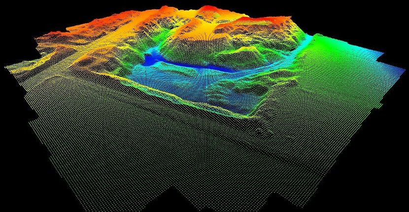
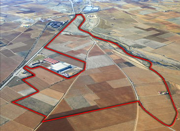

Engloba la utilización de diferentes técnicas y tecnologías para representar la información sobre la superficie o realizar trazados y replanteos de alta precisión para diferentes proyectos de ingeniería.
La geodesia es una de las ciencias más antiguas que se conocen, y se dedica, principalmente, al estudio y determinación de la forma y dimensiones de la Tierra, con sus formas naturales y artificiales, de su campo de gravedad, y las variaciones temporales que esta pueda sufrir. Además la geodesia también se emplea en el mundo de las matemáticas para la medición y el cálculo en superficies curvas. Esto es debido a la superficie curva de la Tierra que se pueda equiparar a otras muchas superficies curvadas.
Una Curva de Nivel es aquella línea que en un mapa une todos los puntos que tienen igualdad de condiciones y de altura. Son generadas a partir del Modelo Digital de Terreno.
Nuestra División conformada por arquitectos y ingenieros geomensores le guiarán en los siguientes servicios diseñados para situaciones de compra de terrenos:
Estudio, determinación de deslindes y elaboración de planos en base a información satelital y escrituras.
